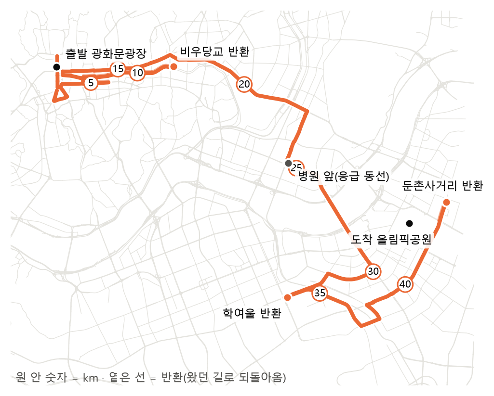
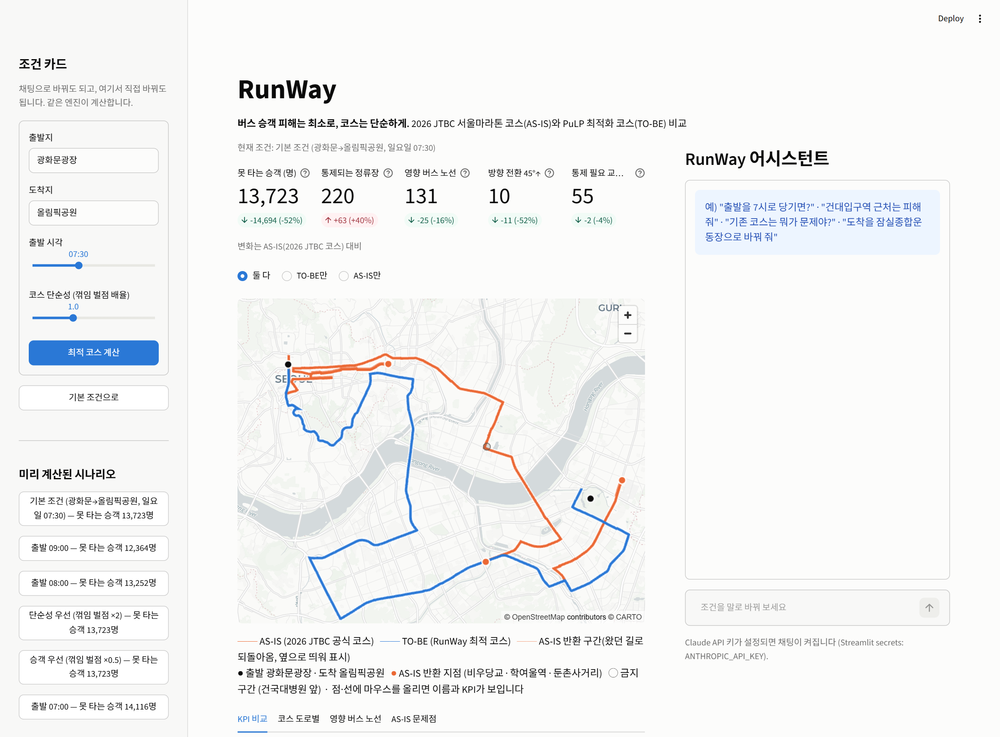
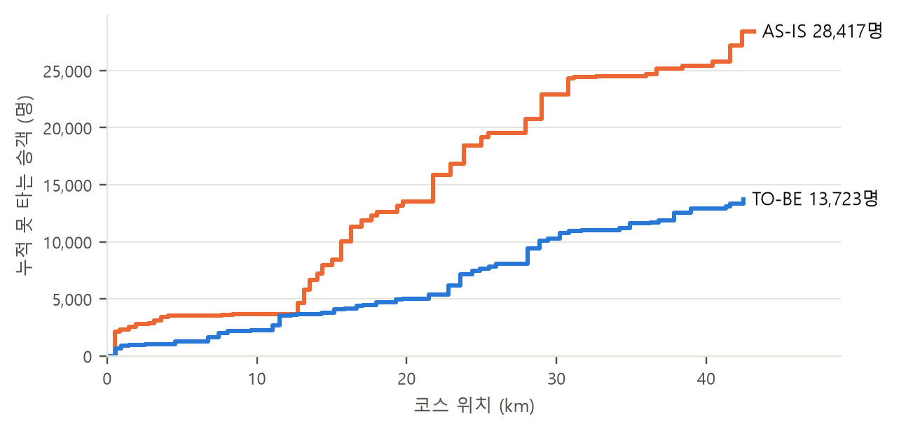
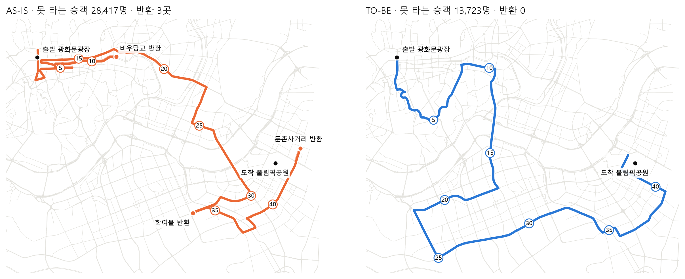

대회 사무국이 "출발을 9시로 늦추면?"처럼 말하면, AI 에이전트가 조건을 해석해 수리최적화(MILP) 솔버를 돌리고 서울시 버스 승하차 실측 데이터로 버스를 못 타는 시민이 가장 적은 42.195km 코스를 지도·KPI로 보여 주는 서비스
수리최적화(MILP·PuLP·HiGHS) · LLM 에이전트(Claude Tool Use) · 서울 열린데이터광장 버스 승하차 · 교통 통제 · 도심 이벤트 운영
도로가 막히면 그 도로 위 정류장의 시민은 버스를 탈 수 없다 — 통제는 코스 위치마다 시간이 다르다 (출발점 근처는 이른 아침 잠깐, 후반 구간은 정오 넘어까지)

| 항목 | AS-IS |
|---|---|
| 통제 시간에 버스를 못 타는 승객 (일요일 기준) | 28,417명 |
| 회귀(반환 왕복 3곳: 비우당교·학여울·둔촌사거리) | 약 15km |
| 재방문 (코스상 2km 넘게 떨어진 두 지점이 300m 안) | 38곳 |
| 하루 1,000명 이상 붐비는 정류장 통과 | 37곳 |
| 통제되는 정류장 / 영향 버스 노선 | 157곳 / 156개 |
| 방향 전환 45°↑ (급한 100°↑) | 21회 (6회) |
도심 마라톤·대형 도로 행사 조직위 / 사무국의 코스·운영 기획 담당자
14,694명 ↓
같은 출발·도착·거리에서 통제 시간에 버스를 못 타는 시민 감소 (-52%, 일요일 추정)
즉시 ~ 2분
조건을 말로 바꾸면 최적 코스를 다시 계산 (사전 계산 조건은 즉시, 새 조건은 수십 초~2분)
근거 자료
지도·KPI 표·도로별 통제 시각·영향 노선 목록을 그대로 관계기관 협의 자료로 사용
| 적용 지점 | 하는 일 | 오류·불확실성 대응 |
|---|---|---|
| ① 조건 해석 | 자연어 → 제약 카드(출발·도착·시각·금지 구간·단순성) | 스키마(Pydantic)로 범위 검증, 범위 밖이면 거절 후 재질문 |
| ② 장소 해석 | 장소 이름 → 좌표 | 좌표를 지어내지 않고 버스정류소 위치 데이터에서만 검색, 후보가 여러 곳이면 사용자에게 선택 요청, 분석 영역 밖은 거절 |
| ③ 도구 오케스트레이션 | 최적화·AS-IS 진단·노선 조회·시나리오 비교 도구 6종 호출 | 해가 없으면 이유와 완화 후보를 제시하고 사용자 승인 후 재계산 |
| ④ 결과 설명 | AS-IS 대비 변화와 코스 특징을 한국어로 설명 | 답변 속 숫자를 도구 결과와 자동 대조, 근거 없는 숫자는 화면에 경고 표시 |
| ⑤ 최적화 (MILP) | LP 완화 → 후보 회랑 → MILP (HiGHS) | 구간대 근사 → 10m 단위 정밀 재평가로 더 나은 코스만 채택, 모든 결과를 규칙 검사기로 독립 검증 |
| 구분 | 내용 |
|---|---|
| 프론트/클라이언트 | Streamlit 1.67, pydeck(지도) |
| 백엔드/에이전트 | Python 3.11, Anthropic Python SDK (Tool Runner), runway 엔진 패키지, Pydantic |
| AI 모델 | Claude Opus 5.5 (claude-opus-5-5), 거절 시 서버 측 대체 모델(fallback) |
| 최적화 | PuLP 3/4 (MILP 모델링) + HiGHS (MIP 솔버), NetworkX, SciPy |
| 외부 API | Anthropic Claude API |
| 데이터 (출처·라이선스) | 서울 열린데이터광장 OA-12913·OA-12912(원자료)·OA-15067 (2026-10) / OpenStreetMap (ODbL) / 2026 JTBC 서울마라톤 대회 책자(공식 코스) |
| 배포환경 | Streamlit Community Cloud (GitHub 연동, 비밀 키는 Secrets) |
조건별 사전 계산 (못 타는 승객): 07:00 출발 14,116명 · 07:30 출발 13,723명 · 08:00 출발 13,252명 · 09:00 출발 12,364명 — 조건 카드(버튼)로도, 채팅으로도 같은 엔진을 호출
| 비교 항목 | 기존 방식 (경유지 수작업) | 길찾기·지도 서비스 | LLM 단독 챗봇 | RunWay |
|---|---|---|---|---|
| 시민(버스 승객) 영향 정량화 | 사후 우회 안내 | 없음 | 추정·지어냄 위험 | 정류장 실측 수요로 계산 |
| 위치별 통제 시간 반영 | 경험 | 없음 | 없음 | 코스 km마다 통제 시각 모델 |
| 42.195km·반환 없음 등 규칙 | 수작업 확인 | 최단 경로만 | 보장 못 함 | 하드 제약으로 보장 + 독립 검사 |
| 조건을 바꿔 다시 검토 | 수작업으로 다시 설계 | - | 즉시이나 근거 없음 | 말로 요청 → 즉시~2분 재계산 |
| 숫자의 신뢰성 | - | - | 낮음 | 솔버 결과만 인용·자동 대조 |



| KPI | AS-IS | TO-BE | 변화 |
|---|---|---|---|
| 못 타는 승객 | 28,417명 | 13,723명 | -52% |
| 방향 전환 45°↑ / 100°↑ | 21 / 6회 | 10 / 2회 | -52% |
| 영향 버스 노선 | 156개 | 131개 | -16% |
| 통제 정류장 (정류장당 이용객 중앙값) | 157곳 (428명) | 220곳 (174명) | 한산한 정류장으로 |
| 이름 | 역할 | 담당 업무 |
|---|---|---|
| [대표자 이름] | 대표자 | [담당 업무] |
| [팀원 이름] | [역할] | [담당 업무] |
| 구분 | 내용 |
|---|---|
| 해커톤 이전 개발 범위 | [작성] 해커톤 이전 개발 범위 (없으면 '해당 없음') |
| 해커톤 기간 중 개발 범위 | MILP 코스 최적화 엔진(runway 패키지)·버스 원자료 반영(일요일 수요·실측 노선)·공식 AS-IS 고정·회귀/재방문 금지 제약·Streamlit 앱·Claude 에이전트·배포 |
| 타 공모전 출품·수상 여부 | [작성] 타 공모전 출품·수상 여부 (없으면 '해당 없음') |
| 구분 | 명칭 | 출처 · 라이선스 | 사용 위치 |
|---|---|---|---|
| 오픈소스 · 템플릿 | PuLP, HiGHS(highspy), Pydantic | MIT | MILP 모델·솔버, 조건 스키마 |
| Streamlit, pydeck, Anthropic Python SDK | Apache-2.0 | 웹앱·지도, 에이전트 | |
| NetworkX, pandas, NumPy, SciPy | BSD-3-Clause | 도로 그래프, 데이터 처리 | |
| 외부 데이터 · API | 버스 승하차 OA-12913·OA-12912(원자료), 정류소 위치 OA-15067 | 서울 열린데이터광장 (data.seoul.go.kr) | 못 타는 승객·노선 계산, 장소 검색 |
| 도로망 | © OpenStreetMap contributors (ODbL) | 도로 그래프, 지도 | |
| 2026 JTBC 서울마라톤 대회 책자·공지 | marathon.jtbc.com | AS-IS 공식 경유지·출발 시각 | |
| AI 모델 · 개발 도구 | Claude Opus 5.5 (Claude API) | Anthropic | 서비스 내 AI 에이전트 |
| Claude Code | Anthropic | 개발 보조(코드 작성·검증) |
본 표: 외부 자원의 명칭·출처·라이선스·사용 위치. AI와 팀의 역할 및 검증 과정은 홈페이지 「AI 활용 내역」에 작성.